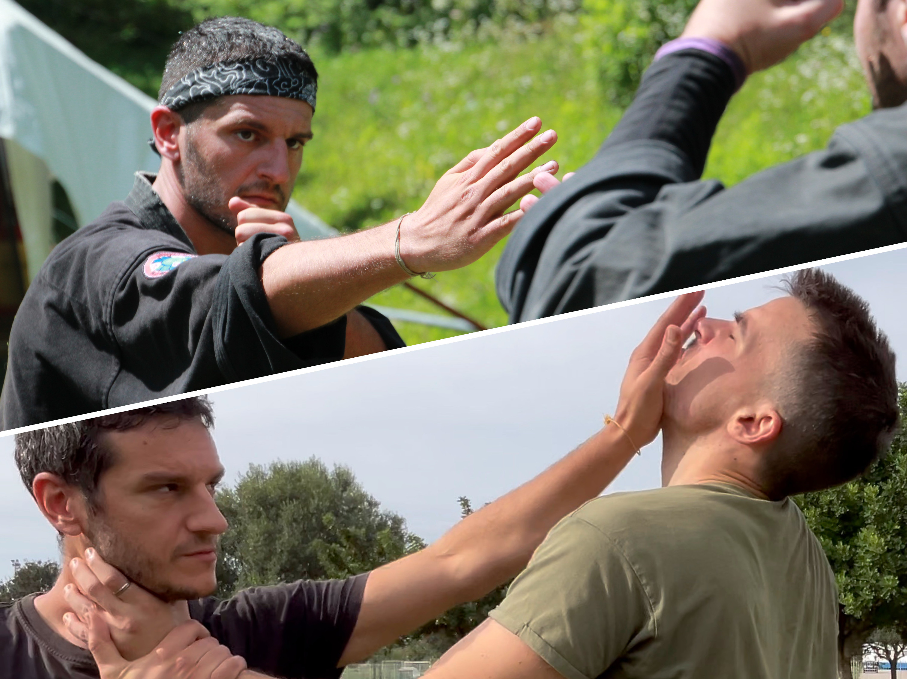

Evento concluso
Stage di Kempo e difesa personale
Due sessioni introduttive di arti marziali tradizionali alla Sailing Gym.
- Quando
9:30–12:30 e 14:30–17:30- Dove
- Sailing Gym
Viale Elmas 59, Cagliari

Il programma
Lo stage promosso dal Ninniku Dojo era articolato in due sessioni, aperte anche ai principianti, con possibilità di partecipare a una sola attività o all’intera giornata.
| 9:30–12:30 | Nio Shin Ryu Kempo Pratica introduttiva a mani nude, con tecniche di percussione, prese e leve articolari, e studio delle armi tradizionali, come bastone e spada. |
|---|---|
| 14:30–17:30 | Difesa personale Sessione introduttiva su tecniche tradizionali applicate alla gestione di situazioni di rischio. |
Condizioni di partecipazione
Non erano richieste esperienze marziali precedenti o una preparazione fisica specifica. Le indicazioni prevedevano abbigliamento comodo, ciabatte per gli spostamenti in palestra e pratica sul tatami a piedi nudi. La sede disponeva di spogliatoi, docce e distributori automatici.
- Intera giornata, Kempo e difesa personale: 35 €.
- Una singola sessione: 25 €.
- Attestato di partecipazione al termine del seminario.
L’iscrizione richiedeva di comunicare preventivamente la propria presenza.
La scuola e l’organizzazione
L’iniziativa era promossa dal Ninniku Dojo, sede cagliaritana della scuola Sakushinkan. Il programma di Nio Shin Ryu Kempo segue gli insegnamenti trasmessi dal Venerabile Seiun.
Il Ninniku Dojo nella scuola Sakushinkan →

Le attività del Dojo
Per conoscere le iniziative e i corsi, consulta gli eventi o contattaci.